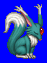
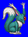
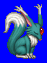
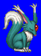

Height: 50-100 cm Weight: ???
Habitat: Forest Origin: South America
Meaning: English word "Carbuncle"
It is said that the Conquistodors witnessed this small animal in their conquest of South America. Its single eye is a vibrant red jewel. The legends say that he who obtains this jewel is promised wealth and happiness. This legend caused many to be led astray into the South American jungle. In RPGs, carbuncles typically have many rare items for the player to obtain.